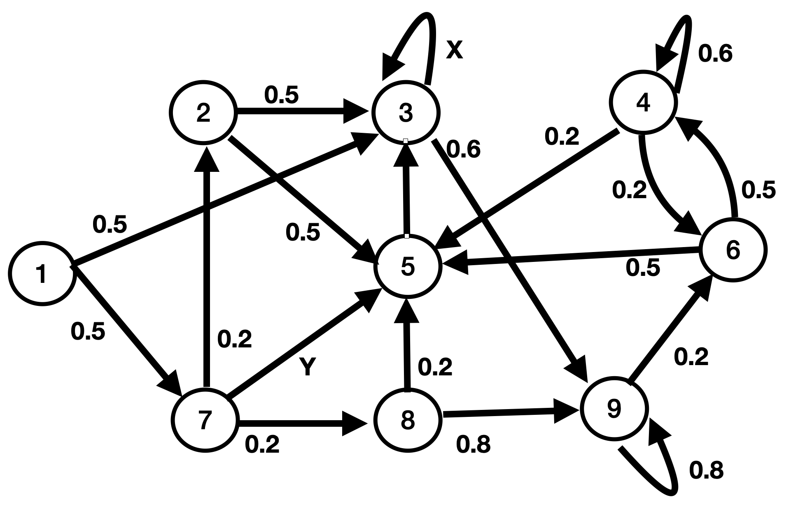
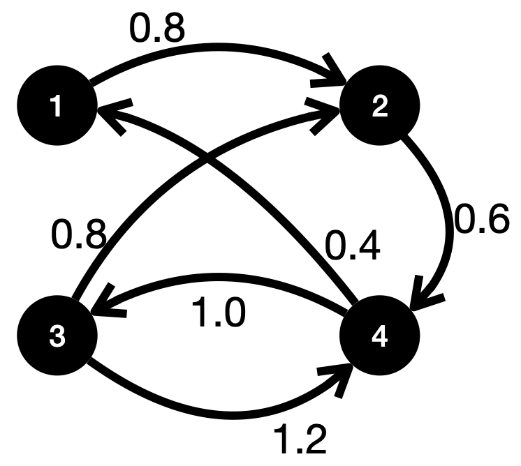

| Фамилия, Имя |
|
Вопросы 1--6 относятся к данной Марковской цепи.  |
| 1. Какие из состояний марковской цепи являются проходными (transient)? |
|
1, 2, 7 1, 2, 3, 8 1, 2, 7, 8 1, 2, 7, 5 1, 2, 3, 5, 7, 8 1, 2, 8 1, 7, 8 |
| 2. Чему равны значения вероятностей перехода \(X\) и \(Y\)? |
|
\(X = 0.2, Y = 0.5\) \(X = 0.4, Y = 0.6\) \(X = 0.4, Y = 0.5\) \(X = 0.3, Y = 0.1\) \(X = 0.1, Y = 0.7\) \(X = 0, Y = 0.1\) \(X = 0.1, Y = 0\) |
| 3. Найдите вероятность \(P(X_{t+2} = 3 | X_{t} = 2)\). |
|
0 0.25 0.2 0.5 0.7 0.525 0.215 |
| 4. Если \(p^*(a)\) -- предельная вероятность для состояния \(X = a\), найдите \(p^*(8)\). |
|
0 0.25 0.3 0.5 1 0.05 0.2 |
| 5. Какие состояния цепи доступны (acessible) из состояния 2? |
|
все состояния 2, 3, 5 3, 5 2, 3, 5, 9 2, 3, 4, 5, 6, 9 2, 3, 7, 9 2, 3, 9 |
| 6. Какие из состояний цепи являются реккурентными? |
|
3, 4, 9 3, 4, 5, 8, 9 2, 5, 8, 6 3, 4, 5, 6, 9 в цепи нет реккурентных состояний 1, 4, 5, 6, 8, 9 все состояния реккурентные |
|
Вопросы 7--10 относятся к данной стохастической матрице. $$ \begin{pmatrix} 0 & 0.3 & x &0 &0.7\\ 0 & 0.1 & y & 0 &0.5\\ 0 & 0 & 0 & 1 & 0\\ 0 & 0 & 0 & 0 & 1\\ 0 & 0 & 1 & 0 & 0 \end{pmatrix} $$ |
| 7. Чему равны \(x\) и \(y\)? |
|
\(x = 0.2, y = 0.1\) \(x = 0, y = 0\) \(x = 0.3, y = 0.7\) \(x = 0, y = 0.4\) \(x = 0.3, y = 0\) \(x = 0.5, y = 1\) \(x = 0.1, y = 0.7\) |
| 8. Сколько периодических состояний в Марковской цепи, заданной данной матрицей переходов? |
|
0 1 2 3 4 5 6 |
| 9. Найдите вероятность \(P(X_{t+4} = 5 | X_{t} = 1)\). |
|
0.7 0.8215 0.815 0 0.35 0.3575 0.315 |
| 10. Найдите вероятность \(P(X_{t+6} = 4 | X_{t} = 2)\). |
|
0 0.9 0.5004 0.5404 0.24 0.2404 0.21 |
|
Вопросы 11--14 относятся к данной стохастической матрице, где * означает некоторые положительные числа. $$ \begin{pmatrix} * & 0 & 0 & * & 0 & 0 & 0 & 0\\ 0 & * & 0 & 0 & 0 & * & 0 & 0\\ 0 & 0 & * & 0 & 0 & 0 & 0 & 0\\ * & 0 & 0 & * & 0 & 0 & 0 & 0\\ 0 & * & * & * & 0 & * & * & 0\\ 0 & * & 0 & 0 & 0 & * & 0 & 0\\ 0 & * & * & 0 & * & 0 & * & *\\ 0 & 0 & 0 & 0 & 0 & 0 & 0 & *\\ \end{pmatrix} $$ |
| 11. Сколько реккурентных состояний в данной Марковской цепи? |
|
2 3 6 5 4 7 1 |
| 12. Какие из состояний данной цепи являются проходными (transient)? |
|
5, 7 2, 4, 5 3, 8 2, 3, 7 3, 5, 7, 8 4, 6, 8 1, 3, 4 |
| 13. Какое минимальное число нулей в матрице переходов нужно поменять на положительные числа, чтобы в цепи не осталось проходных состояний? |
|
2 3 4 5 6 7 8 |
| 14. В цепь добавлено еще одно поглощающее состояние 9, в которое есть переходы из состояний 1, 2, 3, 4, 6, 8. Символом * при этом обозначено одно и то же число. Чему равна вероятноть перехода P(4, 9) из состояния 4 в состояние 9? |
|
0.2 0.3 0.4 0.5 0.6 0.7 0.8 |
|
Вопросы 15--17 относятся к данной Марковской цепи c непрерывным временем. Числа на ребрах представляют собой частоту перехода (transition rate) из одного состояния в другое \(q_{ij}\).  |
| 15. Чему равна вероятность перехода \(P(3, 2)\) из состояния 3 в состояние 2? |
|
1.6 0.4 1.4 0.8 1.0 2.0 1.2 |
| 16. Чему равна частота перехода \(\nu_4\) из состояния 4? |
|
1.6 0.4 1.4 0.8 1.0 2.0 1.2 |
| 17. Чему равно среднее время до перехода \(\T_1\) из состояния 1? |
|
1.4 1.0 1.25 1.5 2.0 0.5 0.8 |